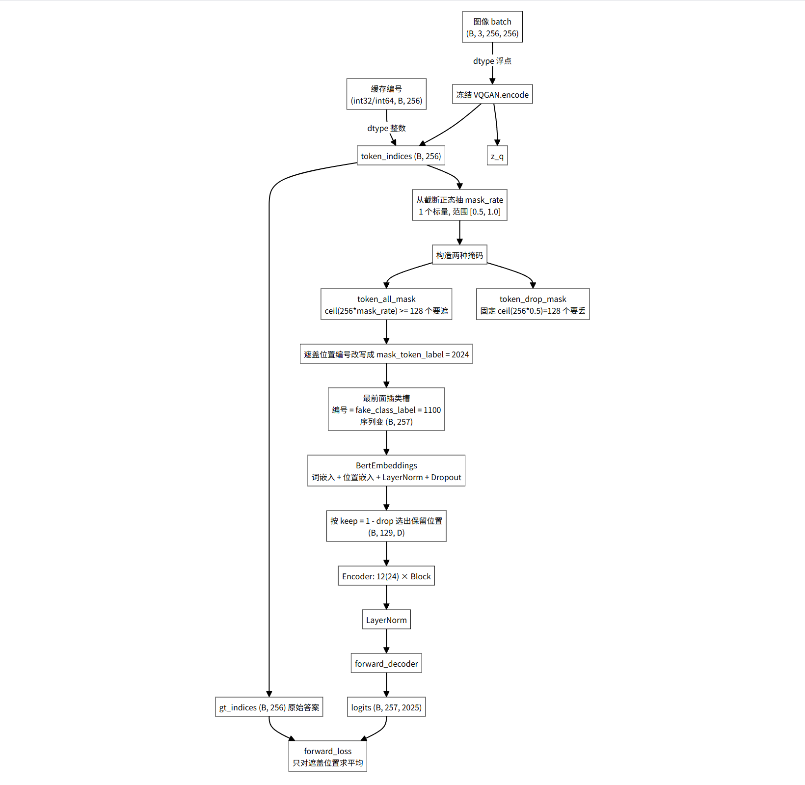
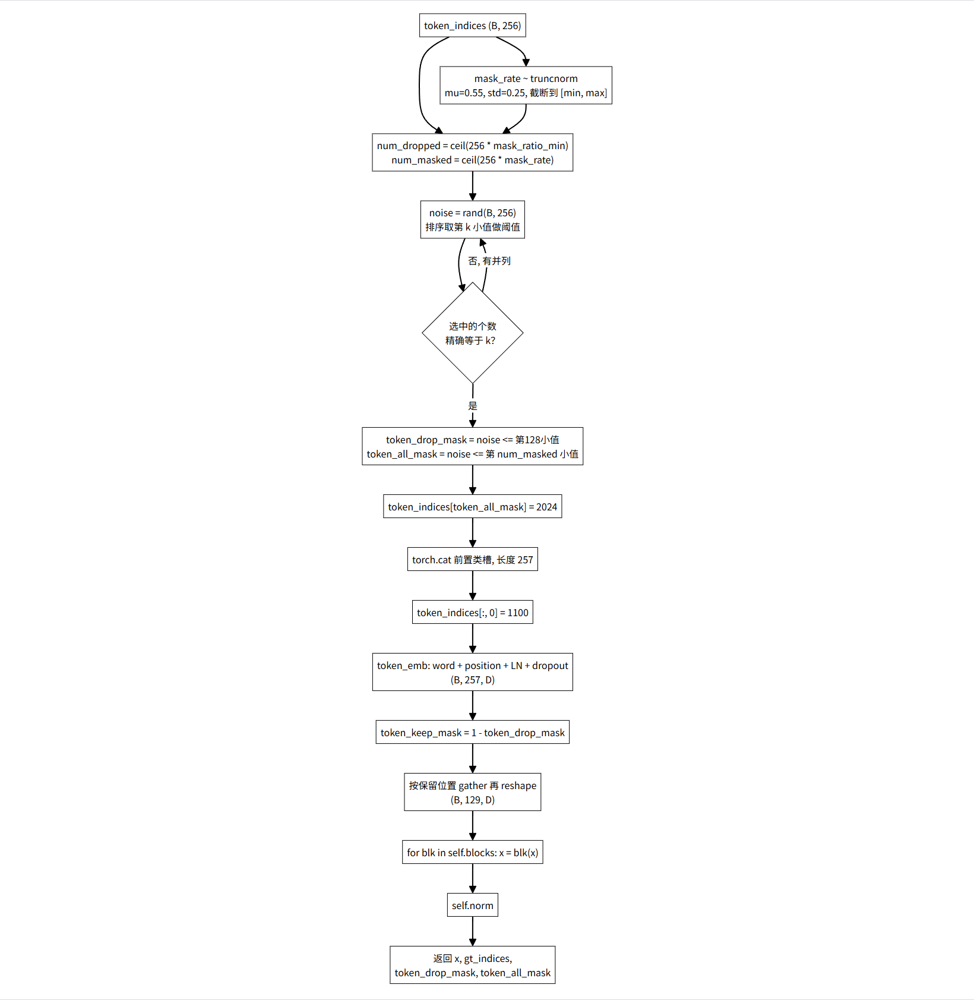
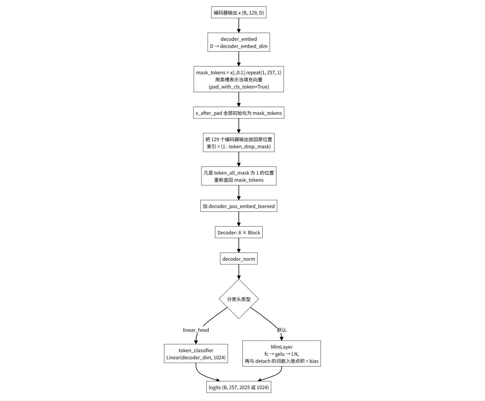
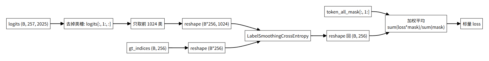
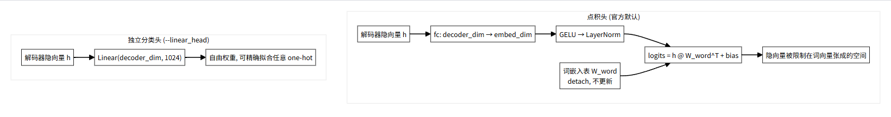
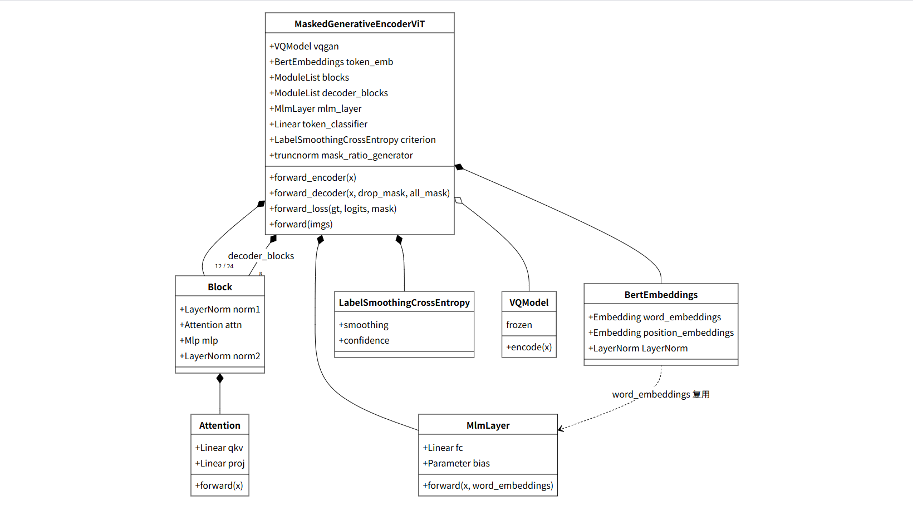
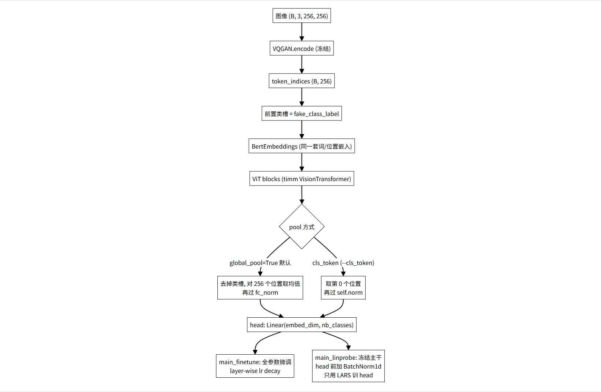
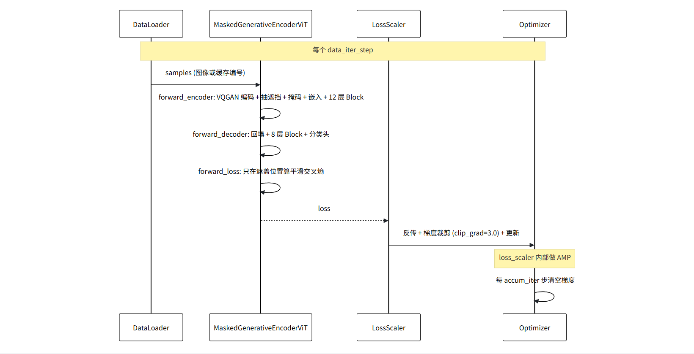
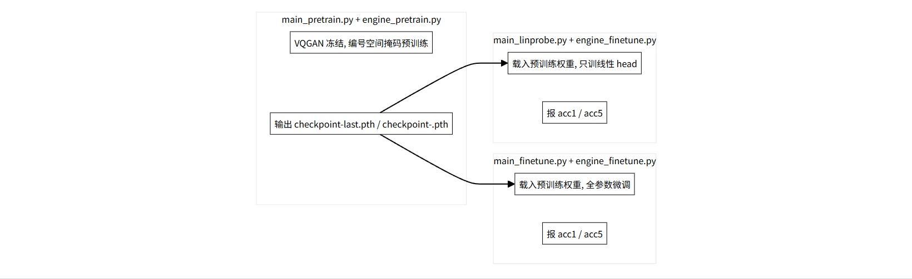

MAGE 源码逐读 · 第 1 篇 / 共 5 篇 · models_mage.py · 主模型
代码文件：models_mage.py（MAGE 预训练与生成的核心模型）
256 个位置，16 × 16
露出 115，编码器看得到只被遮盖 13，仍进编码器被丢弃 128，编码器看不见示意：mask_rate = 0.55，丢弃数固定为 128
系列 5 篇 · 进度
整张图先被冻结的 VQGAN 编码成 16×16=256 个编号，编号取值范围 0..1023。模型在这 256 个编号上做类似 BERT 的掩码预测：盖住一部分位置，让编码器只看剩下的一半，再让解码器把被盖住的位置猜回原来的编号。像素层面它一行都不碰，全部在编号空间里做。
1–13 行
from timm.models.vision_transformer import PatchEmbed, DropPath, Mlp from util.pos_embed import get_2d_sincos_pos_embed from taming.models.vqgan import VQModel from omegaconf import OmegaConf import numpy as np import scipy.stats as stats
PatchEmbed（16×16 卷积切块）、DropPath（随机深度）、Mlp（Transformer 里的前馈层）。util/pos_embed.py 里生成。config/vqgan.yaml 读。scipy.stats 用来抽截断正态的遮挡比例，这是 MAGE 相对 MAE 的关键变动之一。16–44 行
def __init__(self, dim, num_heads=8, qkv_bias=False, qk_scale=None, attn_drop=0., proj_drop=0.): self.num_heads = num_heads head_dim = dim // num_heads self.scale = qk_scale or head_dim ** -0.5 self.qkv = nn.Linear(dim, dim * 3, bias=qkv_bias) self.attn_drop = nn.Dropout(attn_drop) self.proj = nn.Linear(dim, dim) self.proj_drop = nn.Dropout(proj_drop)
dim/num_heads 维。1/sqrt(head_dim)，是标准注意力。3*dim。dim。def forward(self, x): B, N, C = x.shape qkv = self.qkv(x).reshape(B, N, 3, self.num_heads, C // self.num_heads).permute(2, 0, 3, 1, 4) q, k, v = qkv[0], qkv[1], qkv[2] with torch.cuda.amp.autocast(enabled=False): attn = (q.float() @ k.float().transpose(-2, -1)) * self.scale attn = attn - torch.max(attn, dim=-1, keepdim=True)[0] attn = attn.softmax(dim=-1) attn = self.attn_drop(attn) x = (attn @ v).transpose(1, 2).reshape(B, N, C) x = self.proj(x) x = self.proj_drop(x) return x, attn
(B,N,3C) 拆成 (3,B,heads,N,head_dim)，permute(2,0,3,1,4) 就是把 3 提到最前，方便按行取 q/k/v。q·k 容易溢出。transpose(1,2) 把 heads 维和 N 维换回来，再 reshape 成 (B,N,C)。attn（第 44 行）。Block 里默认丢掉它，只有要可视化注意力时才取。47–69 行
def __init__(self, dim, num_heads, mlp_ratio=4., qkv_bias=False, qk_scale=None, drop=0., attn_drop=0., drop_path=0., act_layer=nn.GELU, norm_layer=nn.LayerNorm): self.norm1 = norm_layer(dim) self.attn = Attention(dim, num_heads=num_heads, qkv_bias=qkv_bias, qk_scale=qk_scale, attn_drop=attn_drop, proj_drop=drop) self.drop_path = DropPath(drop_path) if drop_path > 0. else nn.Identity() self.norm2 = norm_layer(dim) mlp_hidden_dim = int(dim * mlp_ratio) self.mlp = Mlp(in_features=dim, hidden_features=mlp_hidden_dim, act_layer=act_layer, drop=drop)
标准 pre-norm Transformer 块。norm1 在注意力前，norm2 在前馈前。drop_path 为 0 时退化成恒等映射（第 56 行）。
def forward(self, x, return_attention=False): if return_attention: _, attn = self.attn(self.norm1(x)) return attn else: y, _ = self.attn(self.norm1(x)) x = x + self.drop_path(y) x = x + self.drop_path(self.mlp(self.norm2(x))) return x
x。x，再过 MLP 加回 x。norm2 加在 MLP 前，而非残差相加之后。72–87 行
def forward(self, x, target): logprobs = torch.nn.functional.log_softmax(x, dim=-1) nll_loss = -logprobs.gather(dim=-1, index=target.unsqueeze(1)) nll_loss = nll_loss.squeeze(1) smooth_loss = -logprobs.mean(dim=-1) loss = self.confidence * nll_loss + self.smoothing * smooth_loss return loss
gather 配合 target.unsqueeze(1) 是为了按索引取值。smooth_loss 是所有类别的平均负 log 概率，代表「均匀猜」的损失。1-smoothing 和 smoothing 加权混合。默认 smoothing=0.1，也就是把正确答案只看成 90% 置信。这就是 README 里反复提到的标签平滑，改 --label_smoothing 0 就退回精确交叉熵。90–124 行
这是 MAGE 把图像编号当「词」喂给 Transformer 的入口。
def __init__(self, vocab_size, hidden_size, max_position_embeddings, dropout=0.1): self.word_embeddings = nn.Embedding(vocab_size, hidden_size) self.position_embeddings = nn.Embedding(max_position_embeddings, hidden_size) self.LayerNorm = nn.LayerNorm(hidden_size, eps=1e-6) self.dropout = nn.Dropout(dropout) self.register_buffer("position_ids", torch.arange(max_position_embeddings).expand((1, -1))) torch.nn.init.normal_(self.word_embeddings.weight, std=.02) torch.nn.init.normal_(self.position_embeddings.weight, std=.02)
std=0.02 初始化。def forward(self, input_ids): input_shape = input_ids.size() seq_length = input_shape[1] position_ids = self.position_ids[:, :seq_length] inputs_embeds = self.word_embeddings(input_ids) position_embeddings = self.position_embeddings(position_ids) embeddings = inputs_embeds + position_embeddings embeddings = self.LayerNorm(embeddings) embeddings = self.dropout(embeddings) return embeddings
pos_embed 是两码事，后者其实没被用到。127–143 行
def __init__(self, feat_emb_dim, word_emb_dim, vocab_size): self.fc = nn.Linear(feat_emb_dim, word_emb_dim) self.gelu = nn.GELU() self.ln = nn.LayerNorm(word_emb_dim) self.bias = nn.Parameter(torch.zeros(1, 1, vocab_size)) def forward(self, x, word_embeddings): mlm_hidden = self.fc(x) mlm_hidden = self.gelu(mlm_hidden) mlm_hidden = self.ln(mlm_hidden) word_embeddings = word_embeddings.transpose(0, 1) logits = torch.matmul(mlm_hidden, word_embeddings) logits = logits + self.bias return logits
这是 README 表格里那一列「点积」的官方实现。
(word_emb_dim, vocab_size)，这里的 word_embeddings 是从外面传进来的、并且已经 detach（见第 363 行）。146–233 行
构造函数比较长，拆开看。
config = OmegaConf.load('config/vqgan.yaml').model self.vqgan = VQModel(ddconfig=config.params.ddconfig, n_embed=config.params.n_embed, embed_dim=config.params.embed_dim, ckpt_path=vqgan_ckpt_path) for param in self.vqgan.parameters(): param.requires_grad = False self.codebook_size = config.params.n_embed vocab_size = self.codebook_size + 1000 + 1 self.fake_class_label = self.codebook_size + 1100 - 1024 self.mask_token_label = vocab_size - 1
vqgan_ckpt_path 加载。codebook_size 就是词表大小 1024，也就是一张图的编号取值范围。vocab_size = 1024 + 1000 + 1 = 2025。多出来的 1000 是给分类任务用的类别编号，最后 1 个是 mask 专用的编号。这说明 MAGE 是「生成 + 分类」的混合模型。fake_class_label = 1024 + 1100 - 1024 = 1100。它是放在序列第 0 位的一个占位编号，用来当 BERT 里的 [CLS]。它的 id 落在类别编号区间里，和真实的 0..1023 编号不会撞车，它对应的那一行嵌入是可学习的。mask_token_label = 2024，遮盖位置用它替换。self.token_emb = BertEmbeddings(vocab_size=vocab_size, hidden_size=embed_dim,
max_position_embeddings=256+1, dropout=0.1)
self.mask_ratio_min = mask_ratio_min
self.mask_ratio_generator = stats.truncnorm((mask_ratio_min - mask_ratio_mu) / mask_ratio_std,
(mask_ratio_max - mask_ratio_mu) / mask_ratio_std,
loc=mask_ratio_mu, scale=mask_ratio_std)embed_dim，位置数 257。[mask_ratio_min, mask_ratio_max]。scipy 的 truncnorm 要求先把上下界标准化成 (a,b)，所以前面减均值除标准差。默认均值 0.55、标准差 0.25、下界 0.5、上界 1.0。每次前向会从这个分布抽一个标量当这次的遮挡比例。这是 MAGE 和 MAE（固定 75%）最大的不同，也是 README 4.4 节「0.5-1 对 0-1」要改的地方。dropout_rate = 0.1 self.patch_embed = PatchEmbed(img_size, patch_size, in_chans, embed_dim) num_patches = self.patch_embed.num_patches self.cls_token = nn.Parameter(torch.zeros(1, 1, embed_dim)) self.pos_embed = nn.Parameter(torch.zeros(1, num_patches + 1, embed_dim), requires_grad=False) self.blocks = nn.ModuleList([ Block(embed_dim, num_heads, mlp_ratio, qkv_bias=True, qk_scale=None, norm_layer=norm_layer, drop=dropout_rate, attn_drop=dropout_rate) for i in range(depth)]) self.norm = norm_layer(embed_dim)
这里要敲黑板：patch_embed、pos_embed、和后面的 decoder_pos_embed 在真正的前向里几乎都不用。实际 token 序列来自 VQGAN 编号经 token_emb 得到的嵌入，位置信息也来自 token_emb 里可学习的位置表。它们是从 MAE 骨架继承下来的遗留结构，num_patches 只是拿来算 pos_embed 的形状用。读代码时不要被它们带偏。
depth 堆编码器块，drop 和 attn_drop 都设成 0.1，qkv_bias=True。self.decoder_embed = nn.Linear(embed_dim, decoder_embed_dim, bias=True) self.mask_token = nn.Parameter(torch.zeros(1, 1, decoder_embed_dim)) self.pad_with_cls_token = True self.decoder_pos_embed = nn.Parameter(torch.zeros(1, num_patches + 1, decoder_embed_dim), requires_grad=False) self.decoder_pos_embed_learned = nn.Parameter(torch.zeros(1, num_patches + 1, decoder_embed_dim)) self.decoder_blocks = nn.ModuleList([... for i in range(decoder_depth)]) self.decoder_norm = norm_layer(decoder_embed_dim) self.decoder_pred = nn.Linear(decoder_embed_dim, patch_size**2 * in_chans, bias=True)
mask_token 又是一个遗留参数，因为第 204 行 pad_with_cls_token = True，实际用的是类槽的表示来填充遮住的位置，这个 mask_token 不会被调用。decoder_pos_embed_learned。decoder_pred 是把解码器输出变回像素块形状的分支，用来做 MAE 那种像素重建。MAGE 走的是编号分类，这条分支同样不参与前向，属于遗留。self.linear_head = bool(linear_head) if self.linear_head: self.mlm_layer = None self.token_classifier = nn.Linear(decoder_embed_dim, self.codebook_size) else: self.mlm_layer = MlmLayer(feat_emb_dim=decoder_embed_dim, word_emb_dim=embed_dim, vocab_size=vocab_size) self.token_classifier = None self.norm_pix_loss = norm_pix_loss self.criterion = LabelSmoothingCrossEntropy(smoothing=label_smoothing) self.initialize_weights()
linear_head=True 时建一个自由的一层线性层直接映射到 1024 类；否则用上面的 MlmLayer 点积头。这对应 README 4.1 节表格里的两行，命令行开关就是 --linear_head。--label_smoothing 0.1/0 就在这里生效。235–264 行
pos_embed = get_2d_sincos_pos_embed(self.pos_embed.shape[-1], int(self.patch_embed.num_patches**.5), cls_token=True)
self.pos_embed.data.copy_(torch.from_numpy(pos_embed).float().unsqueeze(0))
decoder_pos_embed = get_2d_sincos_pos_embed(...)
self.decoder_pos_embed.data.copy_(torch.from_numpy(decoder_pos_embed).float().unsqueeze(0))
w = self.patch_embed.proj.weight.data
torch.nn.init.xavier_uniform_(w.view([w.shape[0], -1]))
torch.nn.init.normal_(self.cls_token, std=.02)
torch.nn.init.normal_(self.mask_token, std=.02)
torch.nn.init.normal_(self.decoder_pos_embed_learned, std=.02)
self.apply(self._init_weights)patch_embed 的卷积权重按线性层方式做 xavier 初始化。cls_token、mask_token、可学习解码器位置嵌入，都用 std=0.02。self.apply 遍历所有子模块，调用 _init_weights。def _init_weights(self, m): if isinstance(m, nn.Linear): torch.nn.init.xavier_uniform_(m.weight) if isinstance(m, nn.Linear) and m.bias is not None: nn.init.constant_(m.bias, 0) elif isinstance(m, nn.LayerNorm): nn.init.constant_(m.bias, 0) nn.init.constant_(m.weight, 1.0)
Linear 和 LayerNorm，nn.Embedding（词嵌入、位置嵌入）和 MlmLayer.bias 不在其中，它们保留各自在构造函数里的初始化。266–333 行
这是全文件最需要慢慢读的地方。
if x.dtype in (torch.int32, torch.int64): token_indices = x.long() if token_indices.dim() == 1: token_indices = token_indices.unsqueeze(0) token_indices = token_indices[:, :256].contiguous() gt_indices = token_indices.clone() device = token_indices.device else: with torch.no_grad(): z_q, _, token_tuple = self.vqgan.encode(x) _, _, token_indices = token_tuple token_indices = token_indices.reshape(z_q.size(0), -1) gt_indices = token_indices.clone().detach().long() device = x.device
main_pretrain.py 里的 --cache_tokens。gt_indices。token_tuple，取第三个元素作为编号，reshape 成 (bsz, 256)，克隆并长期保存为标签。整个过程 no_grad，VQGAN 不产生梯度。bsz, seq_len = token_indices.size() mask_ratio_min = self.mask_ratio_min mask_rate = self.mask_ratio_generator.rvs(1)[0] num_dropped_tokens = int(np.ceil(seq_len * mask_ratio_min)) num_masked_tokens = int(np.ceil(seq_len * mask_rate)) while True: noise = torch.rand(bsz, seq_len, device=device) sorted_noise, _ = torch.sort(noise, dim=1) cutoff_drop = sorted_noise[:, num_dropped_tokens-1:num_dropped_tokens] cutoff_mask = sorted_noise[:, num_masked_tokens-1:num_masked_tokens] token_drop_mask = (noise <= cutoff_drop).float() token_all_mask = (noise <= cutoff_mask).float() if token_drop_mask.sum() == bsz*num_dropped_tokens and token_all_mask.sum() == bsz*num_masked_tokens: break else: print("Rerandom the noise!") token_indices[token_all_mask.nonzero(as_tuple=True)] = self.mask_token_label
mask_rate。num_dropped_tokens 用 mask_ratio_min 算，默认 ceil(256*0.5)=128。这是编码器固定要丢掉的数量。num_masked_tokens 用抽到的比例算，标记为「用 mask 编号替换」的数量。cutoff_drop 是第 128 小值，noise <= cutoff 刚好选中 128 个。while True 循环处理并列的问题：如果噪声里有相等的值，选中个数可能对不上，就重新抽。正常情况下几乎不会触发。token_drop_mask 标记要从编码器输入里删掉的 128 个位置。token_all_mask 标记要替换成 mask 编号的位置，数量至少 128，是它的超集。token_all_mask 为 1 的位置的编号改成 2024。此时改的是输入，gt_indices 还留着原始编号当答案。token_indices = torch.cat([torch.zeros(token_indices.size(0), 1, device=device), token_indices], dim=1) token_indices[:, 0] = self.fake_class_label token_drop_mask = torch.cat([torch.zeros(bsz, 1, device), token_drop_mask], dim=1) token_all_mask = torch.cat([torch.zeros(bsz, 1, device), token_all_mask], dim=1) token_indices = token_indices.long() input_embeddings = self.token_emb(token_indices) bsz, seq_len, emb_dim = input_embeddings.shape token_keep_mask = 1 - token_drop_mask input_embeddings_after_drop = input_embeddings[token_keep_mask.nonzero(as_tuple=True)].reshape(bsz, -1, emb_dim) x = input_embeddings_after_drop for blk in self.blocks: x = blk(x) x = self.norm(x) return x, gt_indices, token_drop_mask, token_all_mask
fake_class_label（1100），当类槽。(bsz, 257, embed_dim)。token_keep_mask 选出没被丢的嵌入，然后 reshape 回 (bsz, 257-128, emb_dim)，也就是 (bsz, 129, ...)。335–367 行
x = self.decoder_embed(x) if self.pad_with_cls_token: mask_tokens = x[:, 0:1].repeat(1, token_all_mask.shape[1], 1) else: mask_tokens = self.mask_token.repeat(token_all_mask.shape[0], token_all_mask.shape[1], 1) x_after_pad = mask_tokens.clone() x_after_pad[(1 - token_drop_mask).nonzero(as_tuple=True)] = x.reshape(x.shape[0] * x.shape[1], x.shape[2]) x_after_pad = torch.where(token_all_mask.unsqueeze(-1).bool(), mask_tokens, x_after_pad) x = x_after_pad + self.decoder_pos_embed_learned for blk in self.decoder_blocks: x = blk(x) x = self.decoder_norm(x) if self.linear_head: return self.token_classifier(x) word_embeddings = self.token_emb.word_embeddings.weight.data.detach() x = self.mlm_layer(x, word_embeddings) return x
x[:,0:1]，重复 257 份当作「填充向量」。所有被遮住的位置都用它填。1 - token_drop_mask 就是保留位置）。token_all_mask 为 1 的位置，重新盖回填充向量。这处理的是「没被编码器丢掉、但属于遮盖集合」的那些位置。detach()，让梯度不从这里回流。369–375 行
bsz, seq_len = gt_indices.size()
loss = self.criterion(logits[:, 1:, :self.codebook_size].reshape(bsz*seq_len, -1), gt_indices.reshape(bsz*seq_len))
loss = loss.reshape(bsz, seq_len)
loss = (loss * mask[:, 1:]).sum() / mask[:, 1:].sum()
return losslogits[:, 1:, ...] 丢掉类槽位置；[..., :self.codebook_size] 只取前 1024 类，把类别编号和 mask 编号的 logits 扔掉，因为这里只做编号预测。然后 reshape 成 (bsz*256, 1024) 与标签对齐。(bsz, 256)。mask[:, 1:] 对应去掉类槽后的 256 个位置。没被遮的位置不贡献损失。377–381 行
def forward(self, imgs): latent, gt_indices, token_drop_mask, token_all_mask = self.forward_encoder(imgs) logits = self.forward_decoder(latent, token_drop_mask, token_all_mask) loss = self.forward_loss(gt_indices, logits, token_all_mask) return loss, imgs, token_all_mask
把三步串起来，返回损失、原始输入、以及遮盖掩码。engine_pretrain.py 里只取第一个 loss，后两个留给需要可视化的调用方。
384–397 行
def mage_vit_base_patch16(**kwargs): model = MaskedGenerativeEncoderViT( patch_size=16, embed_dim=768, depth=12, num_heads=12, decoder_embed_dim=768, decoder_depth=8, decoder_num_heads=16, mlp_ratio=4, norm_layer=partial(nn.LayerNorm, eps=1e-6), **kwargs) return model
main_pretrain.py 第 235 行用 models_mage.__dict__[args.model](...) 按名字取函数，默认就是 mage_vit_large_patch16。mask_ratio_min 决定编码器固定丢多少（默认 128/256）。MlmLayer，权重就是词表）和独立线性层，对应 README 4.1 的两种组合。patch_embed、pos_embed、decoder_pos_embed、mask_token、decoder_pred 是从 MAE 继承的遗留结构，前向里不走。








图 1 · 预训练整体数据流
flowchart TD
IMG["图像 batch<br/>(B, 3, 256, 256)"]
CACHE["缓存编号<br/>(int32/int64, B, 256)"]
IMG -->|"dtype 浮点"| VQ["冻结 VQGAN.encode"]
VQ --> ZQ["z_q"]
VQ --> TOKS["token_indices (B, 256)"]
CACHE -->|"dtype 整数"| TOKS
TOKS --> SAMPLE["从截断正态抽 mask_rate<br/>1 个标量, 范围 [0.5, 1.0]"]
SAMPLE --> MK["构造两种掩码"]
MK --> DROP["token_drop_mask<br/>固定 ceil(256*0.5)=128 个要丢"]
MK --> ALL["token_all_mask<br/>ceil(256*mask_rate) >= 128 个要遮"]
ALL --> REPL["遮盖位置编号改写成 mask_token_label = 2024"]
REPL --> CLSADD["最前面插类槽<br/>编号 = fake_class_label = 1100<br/>序列变 (B, 257)"]
CLSADD --> EMB["BertEmbeddings<br/>词嵌入 + 位置嵌入 + LayerNorm + Dropout"]
EMB --> TRIM["按 keep = 1 - drop 选出保留位置<br/>(B, 129, D)"]
TRIM --> ENC["Encoder: 12(24) × Block"]
ENC --> ENCLN["LayerNorm"]
ENCLN --> DEC["forward_decoder"]
DEC --> LOGITS["logits (B, 257, 2025)"]
TOKS --> GT["gt_indices (B, 256) 原始答案"]
GT --> LOSS
LOGITS --> LOSS["forward_loss<br/>只对遮盖位置求平均"]图 2 · forward_encoder 内部流程
flowchart TD
START["token_indices (B, 256)"] --> RATE["mask_rate ~ truncnorm<br/>mu=0.55, std=0.25, 截断到 [min, max]"]
START --> CNT["num_dropped = ceil(256 * mask_ratio_min)<br/>num_masked = ceil(256 * mask_rate)"]
RATE --> CNT
CNT --> NOISE["noise = rand(B, 256)<br/>排序取第 k 小值做阈值"]
NOISE --> CHK{"选中的个数<br/>精确等于 k？"}
CHK -->|"否, 有并列"| NOISE
CHK -->|"是"| MASKS["token_drop_mask = noise <= 第128小值<br/>token_all_mask = noise <= 第 num_masked 小值"]
MASKS --> SET["token_indices[token_all_mask] = 2024"]
SET --> CAT["torch.cat 前置类槽, 长度 257"]
CAT --> SETCLS["token_indices[:, 0] = 1100"]
SETCLS --> BERT["token_emb: word + position + LN + dropout<br/>(B, 257, D)"]
BERT --> KEEP["token_keep_mask = 1 - token_drop_mask"]
KEEP --> GATHER["按保留位置 gather 再 reshape<br/>(B, 129, D)"]
GATHER --> BLOCKS["for blk in self.blocks: x = blk(x)"]
BLOCKS --> NORM["self.norm"]
NORM --> OUT["返回 x, gt_indices,<br/>token_drop_mask, token_all_mask"]图 3 · forward_decoder 内部流程
flowchart TD
X["编码器输出 x (B, 129, D)"] --> P1["decoder_embed<br/>D → decoder_embed_dim"]
P1 --> P2["mask_tokens = x[:,0:1].repeat(1, 257, 1)<br/>用类槽表示当填充向量<br/>(pad_with_cls_token=True)"]
P2 --> PAD["x_after_pad 全部初始化为 mask_tokens"]
PAD --> FILL["把 129 个编码器输出放回原位置<br/>索引 = (1 - token_drop_mask)"]
FILL --> FORCE["凡是 token_all_mask 为 1 的位置<br/>重新盖回 mask_tokens"]
FORCE --> POS["加 decoder_pos_embed_learned"]
POS --> DBLK["Decoder: 8 × Block"]
DBLK --> DN["decoder_norm"]
DN --> BRANCH{"分类头类型"}
BRANCH -->|"linear_head"| LIN["token_classifier<br/>Linear(decoder_dim, 1024)"]
BRANCH -->|"默认"| MLM["MlmLayer<br/>fc → gelu → LN,<br/>再与 detach 的词嵌入做点积 + bias"]
LIN --> OUT["logits (B, 257, 2025 或 1024)"]
MLM --> OUT图 4 · 损失只作用在被遮盖的位置
flowchart LR
L["logits (B, 257, 2025)"] --> SL1["去掉类槽: logits[:, 1:, :]"]
SL1 --> SL2["只取前 1024 类"]
SL2 --> RS["reshape (B*256, 1024)"]
G["gt_indices (B, 256)"] --> RS2["reshape (B*256)"]
RS --> CE["LabelSmoothingCrossEntropy"]
RS2 --> CE
CE --> CE2["reshape 回 (B, 256)"]
M["token_all_mask[:, 1:]"] --> WM["加权平均<br/>sum(loss*mask)/sum(mask)"]
CE2 --> WM
WM --> FIN["标量 loss"]图 5 · 点积头与独立分类头
flowchart TB
subgraph DOT["点积头 (官方默认)"]
D1["解码器隐向量 h"] --> D2["fc: decoder_dim → embed_dim"]
D2 --> D3["GELU → LayerNorm"]
D3 --> D4["logits = h @ W_word^T + bias"]
WE["词嵌入表 W_word<br/>detach, 不更新"] --> D4
D4 --> D5["隐向量被限制在词向量张成的空间"]
end
subgraph LIN["独立分类头 (--linear_head)"]
L1["解码器隐向量 h"] --> L2["Linear(decoder_dim, 1024)"]
L2 --> L3["自由权重, 可精确拟合任意 one-hot"]
end图 6 · 类结构与组合关系
classDiagram
class MaskedGenerativeEncoderViT {
+VQModel vqgan
+BertEmbeddings token_emb
+ModuleList blocks
+ModuleList decoder_blocks
+MlmLayer mlm_layer
+Linear token_classifier
+LabelSmoothingCrossEntropy criterion
+truncnorm mask_ratio_generator
+forward_encoder(x)
+forward_decoder(x, drop_mask, all_mask)
+forward_loss(gt, logits, mask)
+forward(imgs)
}
class Attention {
+Linear qkv
+Linear proj
+forward(x)
}
class Block {
+LayerNorm norm1
+Attention attn
+Mlp mlp
+LayerNorm norm2
}
class BertEmbeddings {
+Embedding word_embeddings
+Embedding position_embeddings
+LayerNorm LayerNorm
}
class MlmLayer {
+Linear fc
+Parameter bias
+forward(x, word_embeddings)
}
class LabelSmoothingCrossEntropy {
+smoothing
+confidence
}
class VQModel {
frozen
+encode(x)
}
MaskedGenerativeEncoderViT *-- "12 / 24" Block
MaskedGenerativeEncoderViT *-- "8" Block : decoder_blocks
MaskedGenerativeEncoderViT *-- BertEmbeddings
MaskedGenerativeEncoderViT *-- LabelSmoothingCrossEntropy
MaskedGenerativeEncoderViT *-- MlmLayer
MaskedGenerativeEncoderViT o-- VQModel
Block *-- Attention
BertEmbeddings ..> MlmLayer : word_embeddings 复用图 7 · 微调与线性探测的下游路径
flowchart TD
IMG["图像 (B, 3, 256, 256)"] --> VQE["VQGAN.encode (冻结)"]
VQE --> TI["token_indices (B, 256)"]
TI --> CLS["前置类槽 = fake_class_label"]
CLS --> TE["BertEmbeddings (同一套词/位置嵌入)"]
TE --> BLK["ViT blocks (timm VisionTransformer)"]
BLK --> POOL{"pool 方式"}
POOL -->|"global_pool=True 默认"| GP["去掉类槽, 对 256 个位置取均值<br/>再过 fc_norm"]
POOL -->|"cls_token (--cls_token)"| CT["取第 0 个位置<br/>再过 self.norm"]
GP --> HEAD["head: Linear(embed_dim, nb_classes)"]
CT --> HEAD
HEAD --> FT["main_finetune: 全参数微调<br/>layer-wise lr decay"]
HEAD --> LP["main_linprobe: 冻结主干<br/>head 前加 BatchNorm1d<br/>只用 LARS 训 head"]图 8 · 预训练单步时序
sequenceDiagram
participant DL as DataLoader
participant M as MaskedGenerativeEncoderViT
participant S as LossScaler
participant O as Optimizer
Note over DL,O: 每个 data_iter_step
DL->>M: samples (图像或缓存编号)
M->>M: forward_encoder: VQGAN 编码 + 抽遮挡 + 掩码 + 嵌入 + 12 层 Block
M->>M: forward_decoder: 回填 + 8 层 Block + 分类头
M->>M: forward_loss: 只在遮盖位置算平滑交叉熵
M-->>S: loss
S->>O: 反传 + 梯度裁剪 (clip_grad=3.0) + 更新
Note over O: loss_scaler 内部做 AMP
O->>O: 每 accum_iter 步清空梯度图 9 · 三个入口脚本的分工
flowchart LR
subgraph PRE["main_pretrain.py + engine_pretrain.py"]
P1["VQGAN 冻结, 编号空间掩码预训练"]
P2["输出 checkpoint-last.pth / checkpoint-<epoch>.pth"]
end
subgraph FIN["main_finetune.py + engine_finetune.py"]
F1["载入预训练权重, 全参数微调"]
F2["报 acc1 / acc5"]
end
subgraph LIN["main_linprobe.py + engine_finetune.py"]
L1["载入预训练权重, 只训线性 head"]
L2["报 acc1 / acc5"]
end
P2 --> F1
P2 --> L1